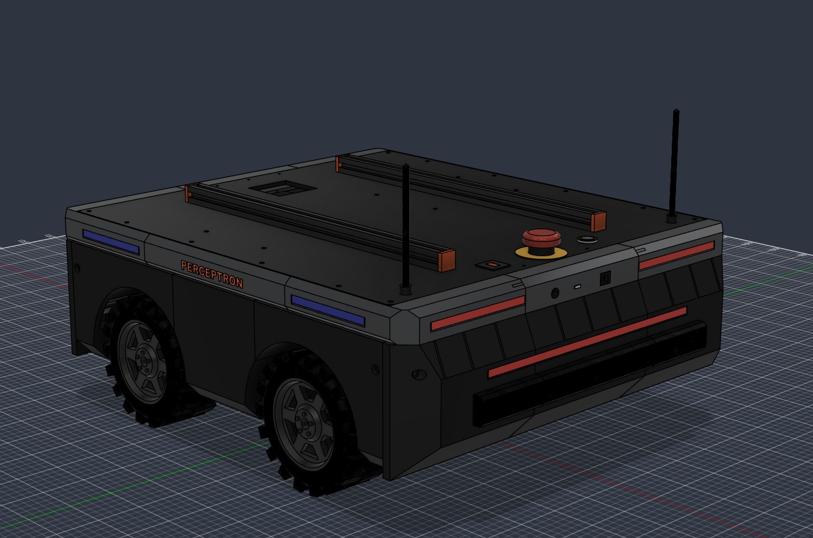

Robotics. Engineering. Curiosity.Designed & built in India +
Our hardware
Two products. One connected platform.
Curion / 01Research platform

PerceptronCAD preview ↗
01 / Research robotEnquiries open
Perceptron
Your next idea needs a place to move.
An open mobile robot for research in navigation, perception and autonomy. Built around ROS 2 and NVIDIA Jetson, with a four-wheel platform you can build on.
We’ll email you the price and shipping date before the first batch.
Hardware is in development. Images show design previews; final specifications and availability will be confirmed with you.
Look around Perceptron
Drag to orbit. Tap a marker to see what sits there.
The lab behind the hardware
Built together. Made to build on.
Curion Labs is an independent robotics lab in India. We work across electronics, embedded systems and robotics software.
Adaline began as the board we needed for Perceptron. Today, we’re opening up both to people with their own questions to explore — in university labs, student teams and robotics startups.